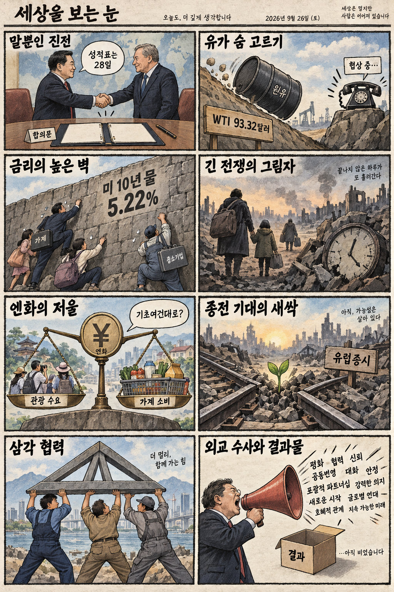
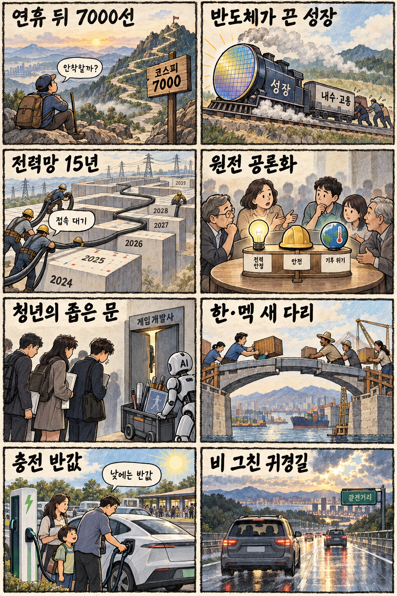

01
마이크로소프트 · 499.14→516.17달러 · +3.41%
내용요약 시가 대비 3.41% 올라 조사 종목 중 가장 강했습니다. 대형 소프트웨어주의 상대강도가 지수 상승을 뒷받침했습니다.
예상여파 국내 소프트웨어·클라우드 심리에는 우호적이지만 장기금리 상승이 밸류에이션 상단을 제한할 수 있습니다.
MORNING_BRIEFING_20260926
작성 시각: 2026-09-26 06:38 KST · 직전 미국 정규장과 2026-09-26 KST 당일 공개 기사 기준
직전 미국 정규장인 9월 25일 뉴욕증시는 다우 +0.93%, S&P 500 +0.51%, 나스닥 +0.48%로 동반 상승했습니다. 미·이란 협상 기대에 국제유가가 하락하며 물가 부담을 덜었고, 필라델피아 반도체지수도 1.4% 올랐습니다. 다만 미 10년물 금리 5.22% 돌파는 성장주 밸류에이션의 상단을 누르는 변수입니다. 한국 증시는 토요일 휴장으로 즉시 반영되지 않으므로 재개장 때 연휴 중 누적 변수를 함께 소화할 가능성에 대비합니다.
| 지수 | 종가 | 등락률 | 한국 증시 시사점 |
|---|---|---|---|
| 다우존스 | 51,828.62 | +0.93% | 유가 하락과 경기민감주 회복, 금리 상단 함께 점검 |
| S&P 500 | 7,743.41 | +0.51% | 유가 하락과 경기민감주 회복, 금리 상단 함께 점검 |
| 나스닥 종합 | 27,068.72 | +0.48% | 반도체 강세는 우호적이나 장기금리 부담 병존 |
다우 +0.93%, S&P 500 +0.51%, 나스닥 +0.48%로 마감했습니다.
미·이란 협상 기대에 국제유가가 2%대 내려 원가 부담을 낮췄습니다.
미 10년물 5.22% 돌파는 성장주와 고부채 업종의 할인율 부담입니다.
토요일 휴장으로 당일 시가 진입과 동일 조건 성과검증이 불가능합니다.
9월 25일 보고서는 추석 휴장으로 공식 추천을 내지 않았습니다. 게시 당시 판단을 유지하며 사후 종목을 추가하지 않습니다.
| 시장 | 종가 | 등락률 | 기준 |
|---|---|---|---|
| KOSPI | 7,080.92 | +0.90% | 최근 거래일 9월 23일 · 오늘 토요일 휴장 |
| KOSDAQ | 844.48 | +1.21% | 최근 거래일 9월 23일 · 오늘 토요일 휴장 |
| 다우존스 | 51,828.62 | +0.93% | 미국 9월 25일 정규장 |
| S&P 500 | 7,743.41 | +0.51% | 미국 9월 25일 정규장 |
| 나스닥 종합 | 27,068.72 | +0.48% | 미국 9월 25일 정규장 |
마이크로소프트가 시가 대비 +3.41%로 조사 종목 중 가장 강했습니다.
슈퍼마이크로 +2.96%, 어플라이드 머티리얼즈 +1.28%로 강했습니다.
테슬라가 시가 대비 -3.32%로 조사 종목 중 낙폭이 가장 컸습니다.
인텔 -3.06%, 크라우드스트라이크 -2.84%로 차별화 약세였습니다.
내용요약 시가 대비 3.41% 올라 조사 종목 중 가장 강했습니다. 대형 소프트웨어주의 상대강도가 지수 상승을 뒷받침했습니다.
예상여파 국내 소프트웨어·클라우드 심리에는 우호적이지만 장기금리 상승이 밸류에이션 상단을 제한할 수 있습니다.
내용요약 시가 대비 2.96% 상승하며 인공지능 서버 관련 수요 기대를 반영했습니다.
예상여파 국내 서버 부품·냉각·전력 공급망 관심을 높일 수 있으나 고변동 종목의 단기 추격은 피해야 합니다.
내용요약 시가 대비 1.50% 올라 대형 기술주 가운데 견조한 흐름을 보였습니다.
예상여파 소비 전자와 부품 공급망 심리에 긍정적일 수 있지만 환율과 제품 수요의 실제 확인이 필요합니다.
내용요약 시가 대비 3.32% 하락해 조사 종목 중 낙폭이 가장 컸습니다. 공개 시세만으로 단일 원인을 단정하지 않습니다.
예상여파 전기차·이차전지 테마의 위험선호를 낮출 수 있어 재개장 시 동종업종의 상대강도를 확인해야 합니다.
내용요약 시가 대비 3.06% 하락해 미국 반도체지수 상승과 달리 종목 차별화가 나타났습니다.
예상여파 반도체 업종 전체 강세를 개별 종목에 일괄 적용하기보다 제품·실적·수급을 분리해 봐야 합니다.
오늘 국내 증시는 토요일로 휴장합니다. 최근 거래일 KOSPI는 7,080.92로 전일 종가 대비 +0.90% 올랐지만 시가 대비로는 -1.02% 밀렸습니다. 미국 3대 지수 상승, 반도체지수 +1.4%, 유가 하락은 재개장 심리에 우호적입니다. 반면 미 10년물 5.22%와 연휴 중 누적 갭은 부담입니다. 좋은 재료와 좋은 진입가격을 구분하고 재개장 초반 급등 종목의 추격매수를 피합니다.
오늘은 추천 없음 — 현금 관망
토요일 휴장으로 당일 시가 진입 기준, 호가 유동성, 장중 수급을 확인할 수 없습니다. 따라서 종합점수 75점, 1일 상승확률 60%, 예상 손익비 1.5의 문턱을 적용할 공식 후보를 제시하지 않습니다.
관심 연결종목 반도체·인공지능 서버·전력망은 재개장 이후 상대강도 관찰 대상일 뿐 매수 추천이 아닙니다. 연휴 재료만 보고 시초가 갭을 추격매수하지 않습니다.
당일 시가·수급이 없으므로 신규 추천과 성과 비교를 중단합니다.
장기금리 고점이 기술주와 원·달러 환율에 미치는 영향을 봅니다.
유가 하락을 만든 협상 기대가 실제 원유 수출 재개로 이어지는지 봅니다.
관세·기술통제·공급망의 구체 합의가 나오는지 확인합니다.
핵심 요약: 인공지능 투자의 초점이 연산 성능에서 전력망·산업 로봇·보안 운영으로 넓어지고 있습니다. 미국 반도체 강세와 기업용 에이전트 매출 성장은 수요를 보여주지만 데이터 노출과 전력 병목이 확장의 비용으로 부상했습니다.
내용요약 인공지능·반도체 확대로 전력 수요가 빠르게 늘면서 탄소중립 목표와 안정적 전력 공급을 함께 달성할 해법을 짚은 당일 보도입니다.
예상여파 데이터센터 전력망·냉각·저탄소 발전 투자는 늘 수 있지만 전기요금, 계통 접속, 배출 감축의 비용 배분이 핵심 변수가 됩니다.
내용요약 미국 인공지능·반도체주가 강세를 보이고 필라델피아 반도체지수가 1.4% 올랐다는 당일 시장 보도입니다.
예상여파 국내 반도체 투자심리에는 우호적이지만 연휴 뒤 누적 가격 변화와 장전 갭을 분리해 판단해야 합니다.
내용요약 인공지능 코딩기업 Cognition이 연환산 매출 10억달러를 넘어섰다고 발표했다는 당일 보도입니다.
예상여파 기업용 인공지능 에이전트의 유료 전환 속도를 보여주지만 매출 지속성, 비용 구조, 고객 집중도를 함께 살펴야 합니다.
내용요약 피지컬 인공지능이 공장 자동화의 제어 계층으로 확장되며 로봇의 두뇌를 둘러싼 경쟁이 본격화됐다는 당일 보도입니다.
예상여파 센서·제어기·산업용 네트워크와 로봇 소프트웨어 수요가 커지는 반면 안전 인증과 현장 데이터 확보가 상용화 속도를 좌우할 수 있습니다.
내용요약 보안업체 조사에서 읽기 가능한 테이블을 노출한 Supabase 데이터베이스가 1만6천326개 발견됐다는 당일 보도입니다.
예상여파 인공지능 서비스를 빠르게 개발하는 과정에서 접근권한과 비밀정보 관리가 취약해질 수 있어 배포 전 보안 점검 수요가 커질 수 있습니다.
핵심 요약: 미중 회담은 구체 결과를 28일 협상 발표로 넘겼고, 미·이란 대화 기대는 유가를 낮췄습니다. 그러나 미국 장기금리의 고점과 러시아 전쟁 장기화는 금융·안보 비용을 높이는 상반된 축입니다.
내용요약 미중 정상이 넉 달 만에 회담을 마쳤지만 구체 결과물보다 진전을 강조하는 외교 수사가 앞섰다는 당일 보도입니다.
예상여파 28일 예정된 무역협상 결과가 관세·기술통제·공급망 불확실성을 실제로 낮추는지 확인해야 합니다.
내용요약 미국과 이란의 협상 기대가 커지며 국제유가가 2%대 하락 마감했다는 당일 보도입니다.
예상여파 에너지·운송 원가 부담은 완화될 수 있지만 해협 재개와 원유 수출의 실행 여부에 따라 변동성이 다시 커질 수 있습니다.
내용요약 미국 10년 만기 국채금리가 5.22%를 돌파해 2007년 이후 최고 수준에 올랐다는 당일 보도입니다.
예상여파 높은 장기금리는 주택·기업 조달비용과 성장주 할인율을 끌어올려 유가 하락의 긍정 효과를 일부 상쇄할 수 있습니다.
내용요약 러시아가 장기 소모전을 넘어 총력전의 새로운 국면으로 들어서고 있다는 분석을 담은 당일 보도입니다.
예상여파 군사·재정 동원이 길어질수록 유럽 안보비용과 에너지·곡물 공급망의 불확실성이 구조적으로 이어질 수 있습니다.
내용요약 미 재무장관이 일본 경제의 기초여건을 반영한 엔화 강세가 바람직하다고 언급했다는 당일 보도입니다.
예상여파 엔화 방향은 일본의 수입물가와 수출기업 채산성뿐 아니라 원화·아시아 통화와 관광 수요에도 영향을 줄 수 있습니다.

핵심 요약: 반도체가 성장과 증시를 이끌지만 내수·고용으로의 확산은 아직 과제입니다. 전력망의 긴 건설 기간과 원전 공론화, 인공지능 시대 청년 채용 감소는 산업 전환이 인프라와 사람에 요구하는 비용을 보여줍니다.
내용요약 추석 연휴 뒤 코스피 7000선 안착 여부와 반도체·인공지능 주도주의 지속 가능성을 점검한 당일 주간 전망입니다.
예상여파 연휴 중 미국 반도체 강세는 우호적이지만 장기금리 상승과 누적 갭을 고려해 재개장 첫날 추격매수를 피할 필요가 있습니다.
내용요약 반도체 수출이 성장률을 끌어올렸지만 호황의 온기가 내수와 고용으로 얼마나 확산됐는지 짚은 당일 보도입니다.
예상여파 수출 대기업 실적과 가계 체감경기의 간극이 지속되면 소비·서비스업 회복과 고용정책의 중요성이 커질 수 있습니다.
내용요약 전력망 건설에 최대 15년이 걸리는 가운데 접속 대기열과 기존망 활용이 산업 병목으로 부상했다는 당일 보도입니다.
예상여파 반도체·데이터센터·재생에너지 투자의 실제 가동 시점이 계통 보강 속도에 좌우될 수 있어 인허가와 비용 분담 개선이 관건입니다.
내용요약 정부의 감원전 기조가 조정될 가능성과 함께 원전 정책 공론화가 빨라지고 있다는 당일 보도입니다.
예상여파 에너지 안보와 탄소 감축에는 선택지가 늘지만 안전성, 건설비, 사용후핵연료를 포함한 사회적 합의가 필요합니다.
내용요약 게임개발자 채용 공고가 26.4% 줄며 인공지능 시대 청년 취업의 문턱이 달라졌다는 당일 보도입니다.
예상여파 초급 직무 축소가 고착되면 인공지능 도구 활용 교육, 실무 포트폴리오, 기업의 신입 양성 투자가 함께 요구됩니다.
